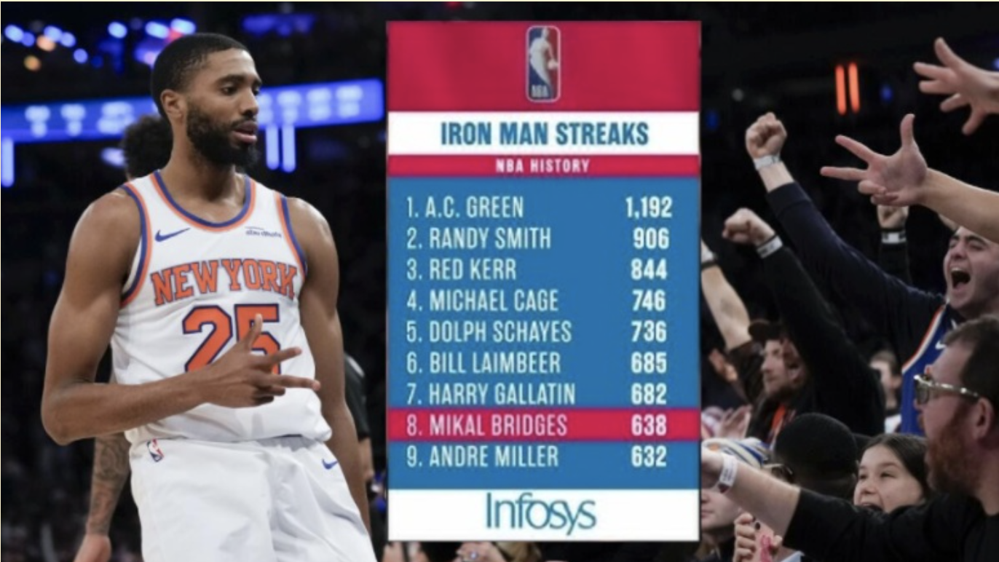

Mikal Bridges: How Probable Was The Iron Man's Streak During The Season?
Even in the day and age of load management, Mikal Bridges is known for his durability, having never missed a single game in his 8-year NBA career or even his high school and college career. However, his durability was…
 russell-westbrook.jpg)